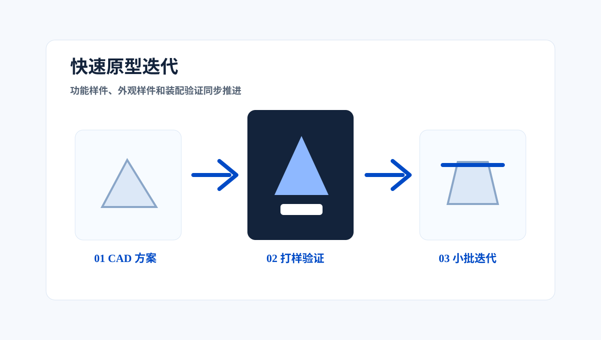
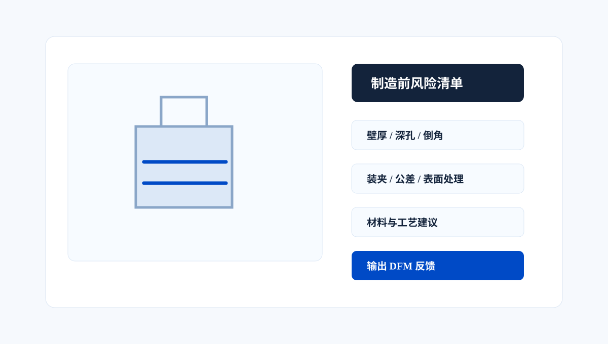
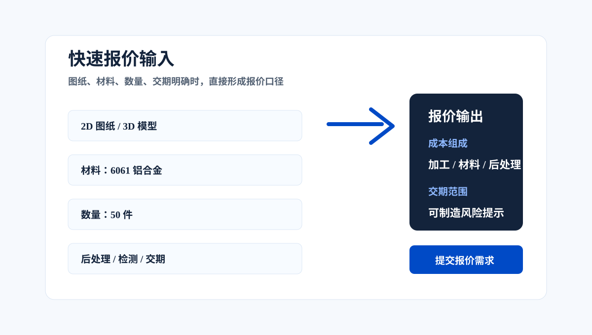
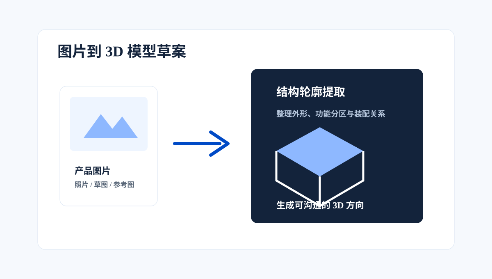
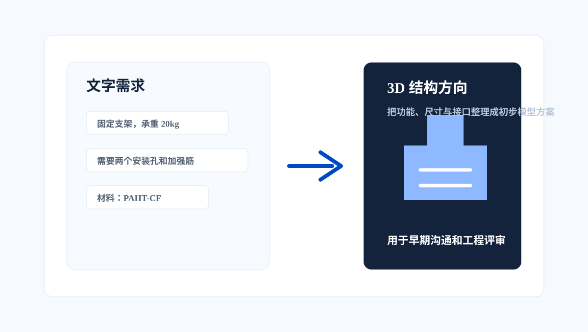
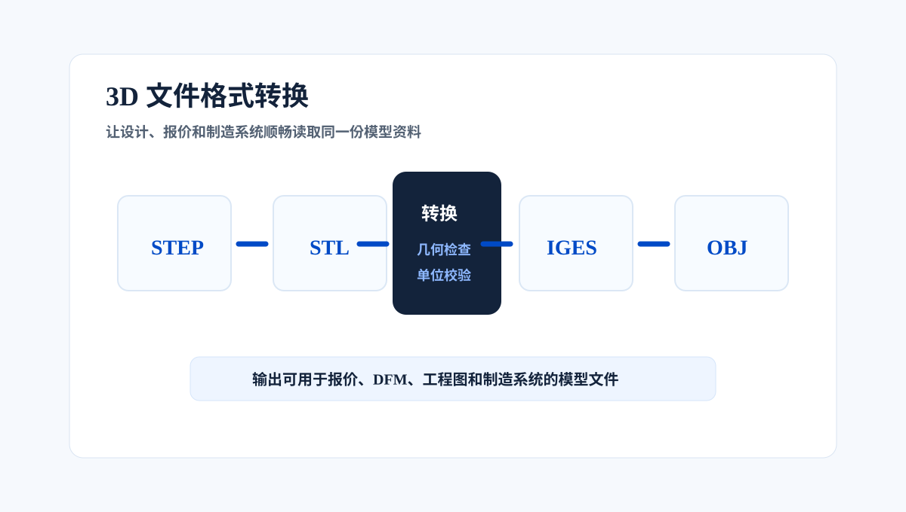
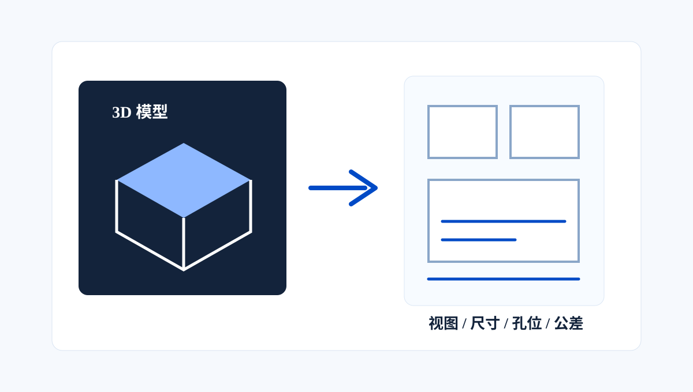
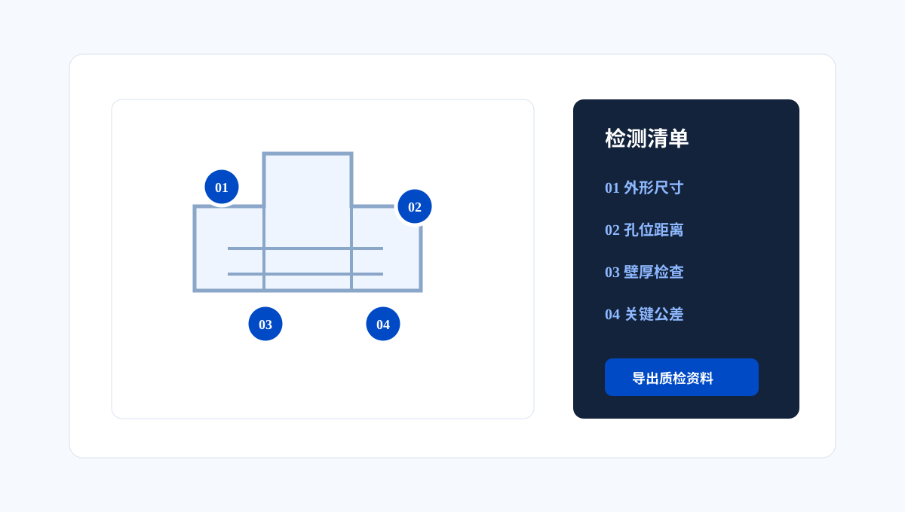

SOLUTION CENTER
Industrial FDM MaterialsManufacturing Solutions
From material selection and process parameters to print validation, post-processing and batch delivery, the Solution Center turns models, drawings and written requirements into quote-ready manufacturing plans.
PAIN POINTS
Common Customer Pain Points
When industrial FDM moves from prototypes into functional parts and low-volume production, problems often come from materials, parameters, validation data and fragmented responsibility.
MATERIAL MATRIX
Industrial Material Matrix
From cost-effective appearance prototypes to high-temperature functional parts, materials are matched by real working conditions and supported by data and process recommendations.
SOLUTION MAP
Choose a Solution by Requirement Status
Each entry maps to a clear workflow so users can move from a model, drawing, picture or text requirement into manufacturing evaluation.
 01
01AI Quoting
Collect material, quantity, process, finishing and delivery inputs through a guided chat, then return pricing range, lead-time and risks.

02Rapid Prototyping
Validate function, appearance and assembly before moving toward low-volume production.

03DFM Check
Review wall thickness, holes, tolerances, clamping, material and finishing risks before quoting and production.

04Quick Quote
For projects with drawings, material, quantity and delivery targets already defined.

05Image-to-3D Model
Extract structure direction from product photos, sketches or reference pictures.

06Text-to-3D Model
Turn function goals, structural constraints and use cases into model directions.

073D Format Conversion
Convert common 3D files and check basic usability for design, quoting and manufacturing systems.

083D to 2D Drawing
Prepare views, dimensions, hole positions, tolerances and notes from a 3D model.

092D Bubble Annotation
Generate balloon numbers and inspection items for quoting, first article inspection and quality communication.
WORKFLOW
Standardized Technical Landing Process
From working-condition diagnosis to batch delivery, each step converts customer requirements into engineering information that can be judged, validated and reused.
01Requirement diagnosisUse environment, load, temperature, flame retardancy, ESD, appearance, quantity and delivery timing.
02Material matchingProvide 2-3 options across cost-effective, high-performance and stable-production choices.
03Printability reviewCheck wall thickness, support, overhangs and warping risk with slicing parameters.
04Trial validationValidate real operating performance through samples and targeted testing.
Need to organize material, process and quote information?
Upload a model, drawing, image or written requirement and move into a connected manufacturing evaluation flow.